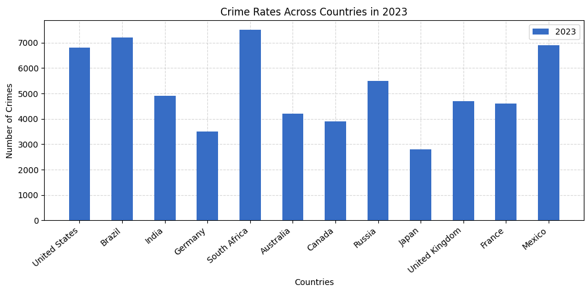
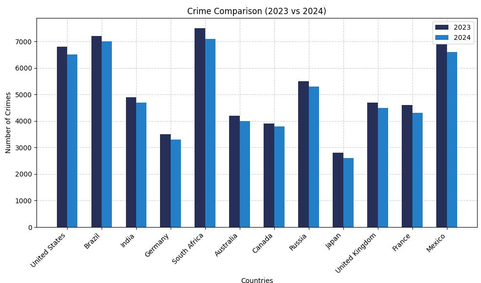

Bar Graphs with a Crime Data Analysis Project
Bar graphs are super handy for comparing stuff — like which country has more crime and who's leading the chaos chart. Instead of drowning in a sea of boring numbers, you get clean visuals that actually make sense. Simple to create, fun to read, and they make you look smart while analyzing serious data.
Why Use Bar Graphs?
They help you spot trends, compare stuff at a glance, and tell a story without saying a word. Whether it's crime stats, fav snacks, or top songs — bar graphs make boring numbers look clean and easy to digest.
What You'll Learn
- How to take boring numbers and turn them into bar graphs
- Visualize real-world crime data from multiple countries
- Plot and compare data from 2023 vs 2024 — side by side
- Add colors, gridlines, and labels to make graphs clean and eye-catching
- Understand bar graph basics without any fluff — just pure logic
Step-by-Step Code Examples
Plotting a single year (2023)
import matplotlib.pyplot as plt
import numpy as np
countries = [
"United States", "Brazil", "India", "Germany", "South Africa", "Australia",
"Canada", "Russia", "Japan", "United Kingdom", "France", "Mexico"
]
crime_2023 = [6800, 7200, 4900, 3500, 7500, 4200, 3900, 5500, 2800, 4700, 4600, 6900]
plt.figure(figsize=(10, 5))
plt.bar(countries, crime_2023, label="2023", zorder=3, width=0.5, color="#376dc5")
plt.xticks(rotation=40, ha='right')
plt.title("Crime Rates Across Countries in 2023")
plt.xlabel("Countries")
plt.ylabel("Number of Crimes")
plt.grid(True, linestyle='--', alpha=0.5, zorder=0)
plt.legend()
plt.tight_layout()
plt.show()Output:

- Imports: We bring in
matplotlib.pyplotfor plotting andnumpyfor advanced stuff later. - Data Setup: Two lists — one for
countriesand another for crime stats in2023. - Chart Size:
figsize=(10, 5)gives enough space so nothing looks cramped. - Plotting Bars:
plt.bar()draws the bars with a clean blue color andwidth=0.5so they're not too chunky. - Rotation Fix:
plt.xticks(rotation=40)tilts the x-axis labels so they don't overlap. - Labels & Title:
plt.xlabel(),plt.ylabel(), andplt.title()give the chart context. - Light Grid:
plt.grid(True, alpha=0.5)adds subtle lines that help read values without being distracting. - Layout Fix:
plt.tight_layout()prevents text from getting cut off.
Plotting 2023 & 2024 side by side
import matplotlib.pyplot as plt
import numpy as np
countries = [
"United States", "Brazil", "India", "Germany", "South Africa", "Australia",
"Canada", "Russia", "Japan", "United Kingdom", "France", "Mexico"
]
crime_2023 = [6800, 7200, 4900, 3500, 7500, 4200, 3900, 5500, 2800, 4700, 4600, 6900]
crime_2024 = [6500, 7000, 4700, 3300, 7100, 4000, 3800, 5300, 2600, 4500, 4300, 6600]
plt.figure(figsize=(10, 6))
x = np.arange(len(countries))
width = 0.3
plt.bar(x - width / 2, crime_2023, width=width, label="2023", color="#262F58", zorder=3)
plt.bar(x + width / 2, crime_2024, width=width, label="2024", color="#247FC9", zorder=3)
plt.xticks(x, countries, rotation=45, ha='right')
plt.title('Crime Comparison (2023 vs 2024)')
plt.xlabel("Countries")
plt.ylabel("Number of Crimes")
plt.grid(True, linestyle='--', alpha=0.6, zorder=0)
plt.legend(loc="upper right")
plt.tight_layout()
plt.show()Output:

- Year Comparison: We plot both
crime_2023andcrime_2024side by side so you can instantly spot changes per country. - X-axis with
np.arange(): Gives each country its own position on the x-axis — clean spacing, no overlap. - Side-by-side bars:
x - width / 2handles 2023,x + width / 2handles 2024 — instant visual comparison. - Bar width:
width = 0.3keeps it tight and tidy — bars don't bump into each other. - Color coding: Navy blue for 2023 (
#262F58) and sky blue for 2024 (#247FC9) — easy to tell apart. - Legend placement:
loc="upper right"keeps it visible but out of the way.
Mini Project: Visualize Top Crime Cities
Let's build a real-world horizontal bar chart using an actual crime dataset — Indian cities with the highest number of reported crimes.
How to Use This Dataset
Not familiar with Pandas? No worries — here's a quick guide to get started.
- Step 1: Download the CSV file above.
- Step 2: Drag and drop it into your code editor (like VS Code).
- Step 3: Write the following code to import and read the data:
import pandas as pd
crime = pd.read_csv("crime_city_insights.csv")That's it! Use the crime variable to explore the dataset. Try crime.head() to view the top rows or crime.describe() for basic stats.